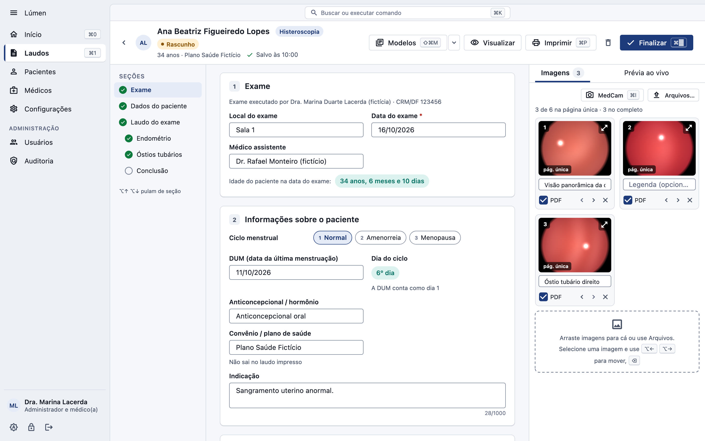
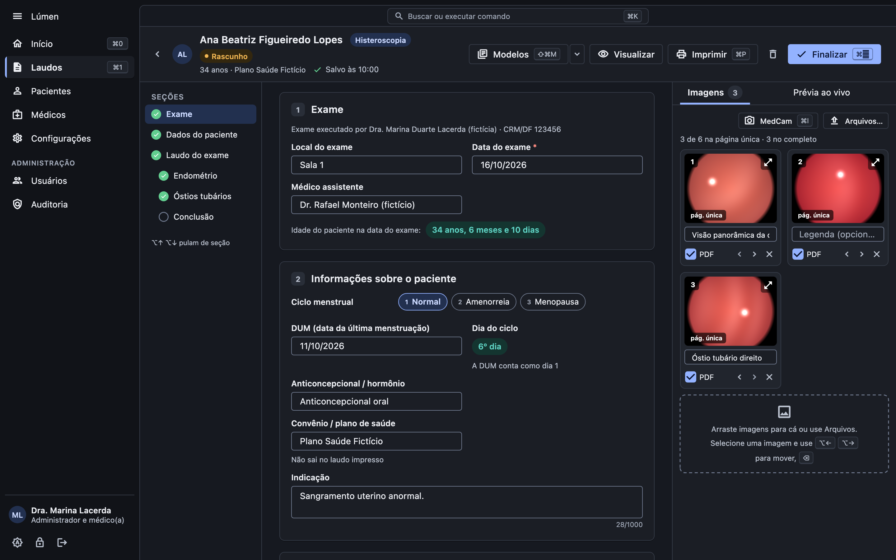

Do exame ao laudo emitido.
Com a luz certa.
O Lúmen é o sistema de laudos de histeroscopia e videolaparoscopia da Hallen Tech: modelos de texto, imagens da câmera, revisão do PDF e emissão arquivada, com os dados cifrados no computador da clínica.
Um laudo por vez, sem retrabalho
O médico escreve, revisa e emite. A secretária cuida do cadastro. O administrador cuida da clínica e do backup. Cada um vê só o que é seu.
Abra o laudo
Paciente, médico e tipo de exame. Escolha um modelo da clínica ou um modelo seu para começar com o texto pronto.
Traga as imagens
Importe da câmera de vídeo (MedCam) ou arraste os arquivos. Ordene, descreva e escolha as que vão para o PDF.
Revise o PDF
Veja a página exatamente como vai sair, no layout da clínica, antes de emitir.
Emita
O PDF é arquivado com uma impressão digital (hash). Reimpressões e retificações ficam registradas.
Feito para o dia a dia do consultório
Use o seletor Claro e Escuro no topo: as telas abaixo mudam junto. Todas com dados fictícios.
Início
Laudos do período comparados com o anterior, rascunhos e o que está aguardando emissão, sem expor conteúdo clínico a quem não é médico.
Laudos
Busca por paciente, filtros por situação, tipo e período, e o caminho de cada laudo do rascunho à emissão.
Editor de laudo
Seções de histeroscopia e videolaparoscopia, modelos com um clique, salvamento automático e a galeria de imagens ao lado.
Revisar e emitir
O PDF final na tela, com a identidade da clínica. Emitido, ele é arquivado e não muda; correções viram uma retificação.
Backup automático
Cópias cifradas em outro disco, verificadas, com restauração guiada. O último backup aparece no Início.
Confortável de manhã e no fim do plantão
O Lúmen acompanha o tema do Windows e do macOS, ou fica no que você escolher. As cores foram ajustadas para o contraste de leitura nos dois.


Dados de saúde tratados como dados de saúde
Pensado para a LGPD desde o começo.
- Banco de dados cifrado no computador da clínica; nada vai para a nuvem sem você decidir.
- Login por usuário, bloqueio após 10 minutos sem uso e papéis separados: médico, secretária, administrador e suporte.
- Conteúdo clínico só para médicos.
- Auditoria encadeada de quem fez o quê, verificada todos os dias.
- Backup cifrado, exportação dos dados do paciente quando ele pedir e importação do sistema anterior.
E mais
O que faz diferença na rotina.
Modelos da clínica e pessoais
Textos prontos por tipo de exame, com busca e o modelo preferido de cada médico.
Imagens da câmera
Importação do MedCam somente leitura e arraste de arquivos do Explorer ou do Finder.
Atalhos de teclado
Ctrl ou ⌘ para trocar de tela, abrir um laudo novo, buscar e emitir, sem tirar a mão do teclado.
Acessível
Texto até 200%, contraste de leitura, navegação por teclado e rótulos para leitor de tela.
Sistema anterior
Importação dos laudos, pacientes e imagens do sistema antigo, com simulação antes de gravar.
Funciona sem internet
Tudo roda no computador da clínica, sem depender de conexão para laudar.
Em breve
A primeira versão pública para Windows 11 sai em breve, assinada pela Hallen Tech. O macOS vem em seguida. Enquanto isso, a implantação é acompanhada pela nossa equipe.
Implantação
Instalamos no computador da clínica, importamos o sistema anterior e configuramos o backup.
Treinamento
Uma sessão com médicos e secretaria para começar com segurança.